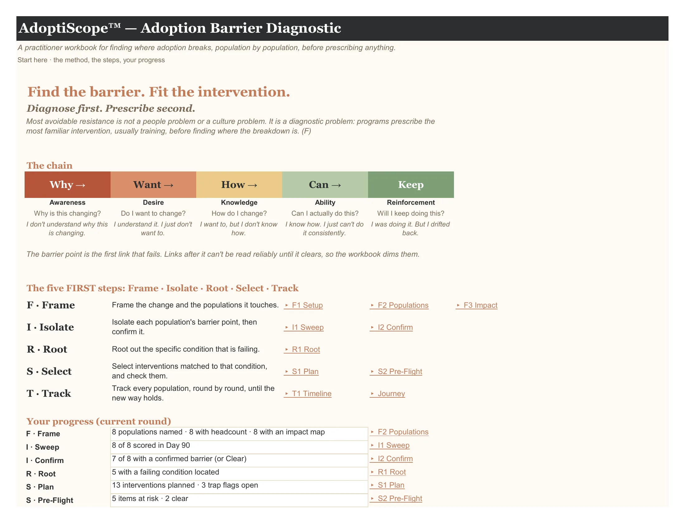

How it is used
A first diagnosis in about 30 minutes.
A first diagnosis takes about 30 minutes: F1 Setup → F2 Populations → I1 Sweep → I2 Confirm → S1 Plan → Readiness Map. Everything else adds depth, and the workbook still works if you skip it.
Cream cells are for input; white cells are computed. Dropdowns carry the allowed values, and hovering over a column header explains it.
Then re-run the Sweep each round (baseline, pre-go-live, go-live, day 30, 60, 90 …). Change the current round in F1 Setup and every view follows it. Barriers move; regression is its own diagnosis.
The workflow shows how information moves between the tabs, and the tab pages explain every column and dropdown.
